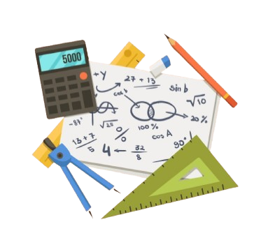

Bilangan Kompleks adalah bilangan-bilangan yang berbentuk (a + ib) dimana a & b adalah bilangan real dan i adalah satuan imajiner yang disebut iota yang menyatakan √-1.
Misalnya, 2 + 3i adalah bilangan kompleks yang mana 2 adalah bilangan real dan 3i adalah bilangan imajiner. Bilangan kompleks dapat dituliskan sebagai a + ib dimana a dan b adalah bilangan rasional yang dapat direpresentasikan pada garis bilangan yang memanjang hingga tak terhingga.
• z1 = 5+j2 dan z2 = 2+j3 dengan menggunakan
diagram Argand
z1= 5+j2 dan z2= 2+j3 dengan
menggunakan diagram
Argand :
1. Ujung z1 gambarkan vector
AP yang arah dan besarnya
menyatakan z2, yaitu AP sama
sejajar dengan OB.
2. Segiempat OAPB merupakan
jajargenjang.
3. Jumlah z1 dan z2 dinyatakan
oleh vector yang
menghubungkan titik asal
dengan titik ujung vector
terakhir, yaitu OP.
Jadi bilangan kompleks
z1 dan z2 terdapat di
jajaran genjang yang
dibentuk oleh z1 dan z2.
Nilai a= 5+2=7
B= 2+3=5
maka, OP = z = 7+j5
Untuk membuktikannya
dapat diperiksa
dengan penjumlahan
secara aljabar.
•z = a + jb
= r(cos θ+j sinθ)
•r = √a^2+b^2; θ = tan^(-1){b/a}
•Juga a = r cosθ ; b = r sinθ
•r = modulus, dituliskan 'mod z'
atau |z|
•θ = argument z, dituliskan 'arg z'
Contoh 1: Menentukan hasil penjumlahan dan pengurangan pada bilangan kompleks.
Pertanyaan: Tentukan berapa hasil penjumlahan dan pengurangan dari bilangan di bawah ini:
x1 = 5 + j4 dan x2 = 2 - j3
a. x1 + x2
b. x1 - x2
Jawab:
a. x1 + x2
= (5 + j4) + (2 - j3)
= (5 + 2) + j(4 - 3)
= 7 + j (j1 bisa dituliskan dengan notasi j saja)
b. x1 - x2
= (5 + j4) - (2 - j3)
= (5 - 2) + j(4 + 3)
= 3 + j7
Contoh 2: Menentukan hasil perkalian dan pembagian pada bilangan kompleks.
Pertanyaan: Tentukan berapa hasil perkalian dan pembagian dari bilangan di bawah ini:
z1 = 4 + 3i dan z2 = 1 - 2i
a. Hitunglah hasil perkalian z1 ⋅ z2.
b. Hitunglah hasil pembagian z1 / z2.
Jawab:
a. z1 ⋅ z2
(4 + 3i) ⋅ (1 - 2i)
= 4 ⋅ 1 + 4 ⋅ (-2i) + 3i ⋅ 1 + 3i ⋅ (-2i)
= 4 - 8i + 3i - 6i
Karena i = -1, maka:
= 4 - 8i + 3i - 6(-1)
= 4 - 8i + 3i + 6
= 4 + 6 - 8i + 3i
= 10 - 5i
Jadi, hasil perkalian z1 ⋅ z2 adalah 10 - 5i.
b. z1 / z2
Untuk menghitung z1 / z2, kita kalikan pembilang
dan penyebut dengan konjugat dari penyebut.
Konjugat dari 1 - 2i adalah 1 + 2i:
(4 + 3i) / (1 - 2i) × (1 + 2i) / (1 - 2i)
1. Hitung pembilang:
(4 + 3i)(1 + 2i)
= 4 ⋅ 1 + 4 ⋅ 2i + 3i ⋅ 1 + 3i ⋅ 2i
= 4 + 8i + 3i + 6i
= 4 + 11i + 6(-1)
= 4 + 11i - 6
= -2 + 11i
2. Hitung penyebut:
(1 - 2i)(1 + 2i)
= 1 ⋅ 1 + 1 ⋅ 2i - 2i ⋅ 1 - 2i ⋅ 2i
= 1 + 2i - 2i - 4i
= 1 - 4(-1)
= 1 + 4
= 5
Maka, hasil pembagian:
(-2 + 11i) / 5
= -2/5 + 11i/5
= -0.4 + 2.2i
Jadi, hasil pembagian dari z1 / z2 adalah -0.4 + 2.2i.